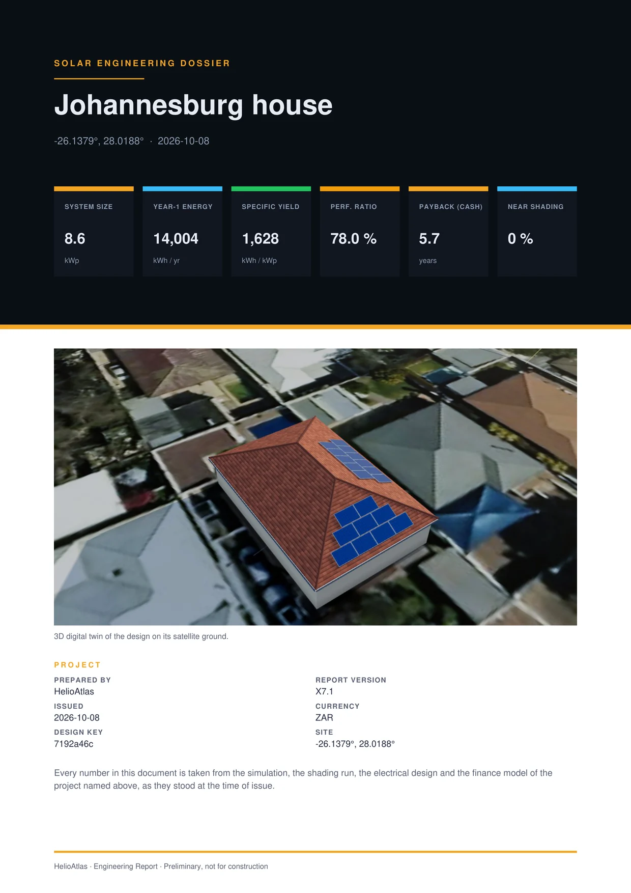
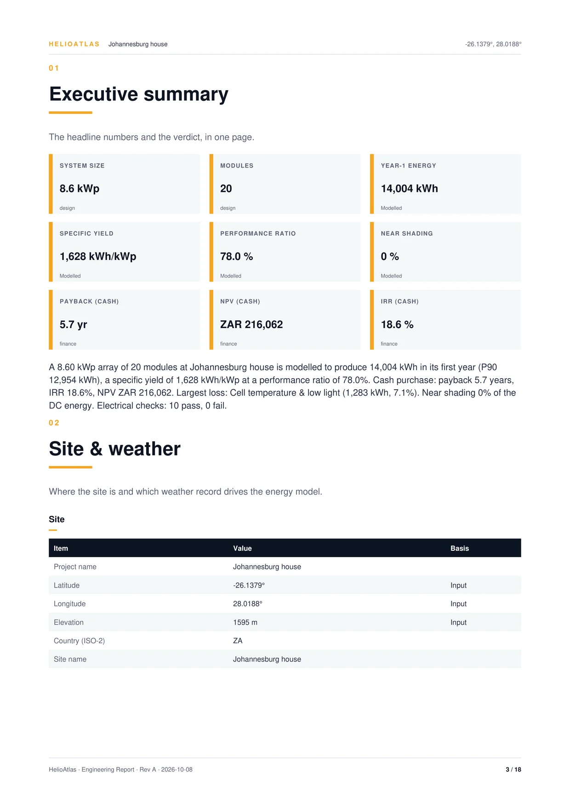
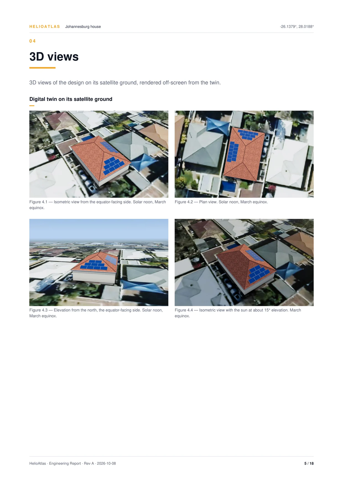
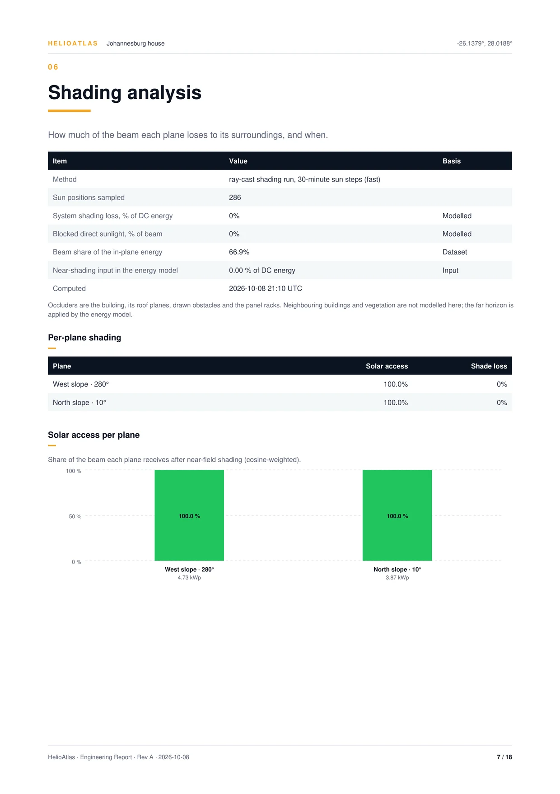
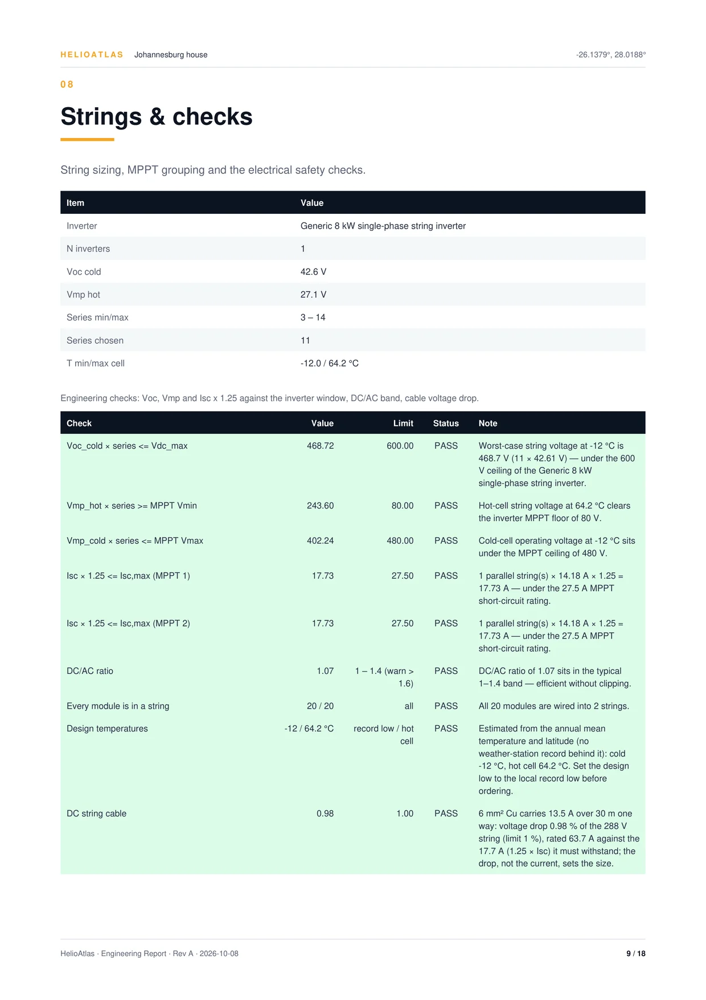
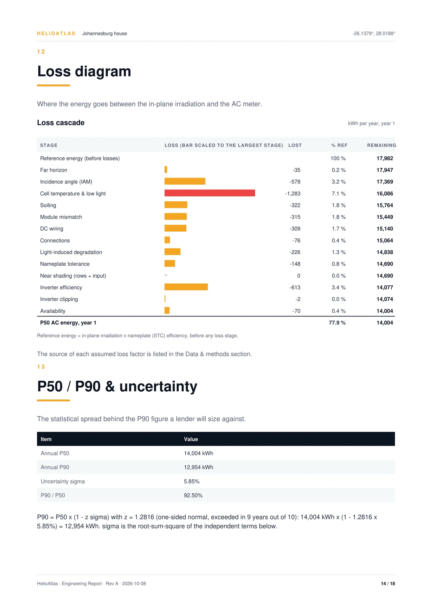

The method, the assumptions and the bias.
Every energy figure comes from one hourly chain, a typical weather year and a stated uncertainty. This page shows each step, each default we assumed, and the offset we measured against two independent references.
One chain, every hour, every roof face.
Each face runs the same eleven stages for all 8,760 hours of a typical year. Thirteen named losses are taken along the way, each one measured where it happens.
- 01
Weather recordRead at the instant each hour describes, in UTC
- 02
Sun positionSolved for that instant at the site
- 03
TranspositionBeam, sky and ground light onto the tilted face, with an anisotropic sky
- 04
Far horizonA 360-point profile masks the beam and scales sky light
Loss 01 - 05
Incidence angleReflection at the glass for beam, sky and ground light
Loss 02 - 06
Cell temperatureFrom irradiance and ambient conditions
Loss 03 - 07
Low lightEfficiency falls in dim light, on an assumed curve
Loss 03 - 08
DC powerSoiling, mismatch, wiring, connections, light-induced degradation, nameplate and near shading
Loss 04–10 - 09
Inverter part-loadEfficiency curve at each hour's DC load
Loss 11 - 10
ClippingThe AC limit, from the inverter rating and DC:AC
Loss 12 - 11
AC energyAvailability, then yearly kWh and the performance ratio
Loss 13
Each roof face gets its own run. For every hour of a typical year the chain reads the weather at the instant the record describes, places the sun at that instant, and moves beam, sky and ground light onto the tilted face. From there each stage takes its share: the far horizon, reflection at the glass, hot cells, dim light, the DC losses, the inverter's part-load curve and its AC limit.
Every loss is the energy before a stage minus the energy after it. The 13 losses add up exactly to the gap between the reference and the AC output.
The reference is the DC energy the face would make at its irradiance with cells at 25 °C, before the horizon and incidence losses. It is the one denominator for every loss on this page.1
Mountings and rows
Five mountings share the chain: roof-flush, roof-rack, open-rack, ground-fixed and a single-axis ground tracker with backtracking. Row-to-row shading is modelled for racks. A bifacial rear side comes from a two-dimensional view-factor model of the surface, clearance, row spacing and bifaciality, with a 10 % rear derate assumed.
Performance ratio
PR follows the IEC definition: AC energy over kWp times the plane's irradiation before the incidence loss. On the three example designs it reads 78.0 % for the Johannesburg house, 74.1 % for the Cikarang warehouse and 78.7 % for the Bavarian barn.
Open any energy figure in the studio to see its weather record and years, the engine version, its loss sources and the uncertainty terms behind it.
1 · The studio's step-4 loss list shows each stage as a share of everything lost, which is a different denominator. Every percentage on this page is a share of the reference.
A typical year one good month cannot flatter.
Each site gets 12 typical months from a 2005 to 2023 hourly record. Each month is anchored to its 19-year mean, so the year follows the long-run average, not one unusual month.
- Record
- 2005–2023hourly
- Typical year
- 12 months8,760 h
- Source
- satellitewhere covered
- Elsewhere
- reanalysisσ term 8 %
Two numbers, and the σ behind the gap.
P50 is the typical year. P90 is the year the system should beat nine times in ten. The gap comes from named uncertainty terms, added in quadrature.
- Resource, satellite
- 4 %
- Resource, reanalysis
- 8 %
- Year to year
- measuredfloor 1 %
- Model
- 3 %tracker 4.5 %
- Geometry
- 1 %
- Degradation rate
- 0.2 %
Year to year is the spread of annual irradiation in the site's own 19-year record. A bifacial design adds 25 % of its rear gain as a further term.
P50 drives the money. Savings, payback, IRR and 25-year net value use P50 energy for year one; the 25-year cash flows then apply 0.5 % a year degradation.
The sun, computed in your browser.
The solar geometry behind the shadows, the key days and the shading run, drawn live for each example site.
- Johannesburg
- −26.138°28.019°
- Solar time
- Sun now
- Cikarang
- −6.299°107.148°
- Solar time
- Sun now
- Bavaria, approx.
- 48.1°11.6°
- Solar time
- Sun now
Local mean solar time at the site's longitude, not the civil clock. Sunrise and sunset use the almanac horizon of −0.833°.
Where the energy goes.
Every loss is stated as a share of the reference: the energy the face would make loss-free. Here are the four largest in the Johannesburg house's stored run.
- Soiling
- 2 %
- Module mismatch
- 2 %
- DC wiring
- 2 %
- Connections
- 0.5 %
- Light-induced degradation
- 1.5 %
- Nameplate tolerance
- 1 %
- Availability
- 0.5 %
- Near shading
- 0 %or the shading run
A default is an input: it applies to the energy that reaches its stage. That is why a 2 % soiling default lands as 1.79 % of the reference. All eight are flagged assumed, and one click resets them.
Shade, ray by ray.
The workbench casts rays from each panel towards the sun on an average day of every month and counts the ones that reach the sky. It models the direct beam, and one click writes the result into the near-shading stage.
Two runs on the examples
Johannesburg house: 0.0 % near shading over about 286 sun-up positions. Cikarang warehouse: 0.5 % across 700 panels.
What blocks the sun
Walls, other roof planes, the obstacles you draw and other planes' racks. Row-to-row shading is modelled for racks.
What it leaves out
Diffuse blocking, module-level electrical mismatch, trees and neighbouring buildings. The far horizon enters the chain as a profile instead.
Strings checked against the coldest and hottest cell.
Every string is tested against the inverter's limits, then cables are sized to a stated voltage drop. Two inputs are assumptions, and the studio labels both.
- Inverter
- generic 8 kW
- Strings
- 220 of 20 modules
- DC:AC
- 1.07
- Isc × 1.25
- 17.73A · limit 27.5
Design low is the typical year's minimum − (4 + 0.25 × |latitude|) K. The studio marks it estimated; enter the local record low to replace it.
Cables are sized to ≤ 1 % DC and ≤ 1.5 % AC drop over assumed one-way runs of 30 m DC and 10 m AC. Faces more than 10° apart never share an MPPT input.
A report that shows its working.
Seven compute steps, then a cover, a contents page with real page numbers and 20 sections, from the executive summary to the disclaimer, under your name and logo.






Engineering report · six of the 18 pages of the Johannesburg house example report; click a page to read it full sizeSections flow, so the PDF runs longer than its 20 sections
A measured difference, not an accuracy claim.
We ran the engine at 13 sites against two independent references on one common plane, the optimum tilt facing the equator, with each tool at its own default losses. Positive means the engine reads higher.
| Site | Engine | Public calculator | Difference | Satellite service | Difference |
|---|
The offset that remains against the calculator comes from the module-technology assumption. We quantified it and did not tune it away.
A third, US-based reference covers only 6 of the 13 sites, so it is not part of the headline figures.
The example rows use the common plane, not the designs' own yields of 1,628, 1,404 and 1,004 kWh/kWp.
What changed in the engine, and what it moved.
A 34-item assumption audit ran with the validation above. These are the changes it produced, each with its effect on results.
Engine release validated at 13 sites
- The old shortcut ran 19 to 26 % high on gable and hip roofs
Pitched roofs use per-face yields.
The live estimate and the area scan used one equator-facing plane for every roof shape. Each face now runs on its own.
- Self-consumption at UTC+7 was about 20 points low
Load shapes follow the site's time zone.
The 24-hour load profiles ignored the site's time zone.
- Beam had read about 75 % high at Cikarang; yield −4.1 % at the worst site
Reanalysis light is re-split.
The beam and diffuse split is now derived from global irradiance where only reanalysis exists.
- PR had read 2.2 to 3 points high
Performance ratio on the IEC definition.
PR divided by irradiation after the incidence loss. It now uses the plane's irradiation before it.
- Yield −1.6 to +0.3 % by site
The sun is placed at the right instant.
Solar position was solved at the record's time stamp, not the instant the record describes.
- Horizon loss now 0.1 to 1.2 % across the sites
The far horizon reaches the chain.
A parsing fault returned an empty profile, so the horizon loss was always zero.
- Yield −0.4 % and −0.7 %
A part-load inverter and low-light efficiency.
A flat 96 % inverter became a part-load curve, and a low-light efficiency curve was added.
- Yield −0.14 % on average
Clear hours stay below the record's peak.
The monthly anchor factor also scaled clear hours. Those are now filled under the series' own 99th-percentile clear-sky ratio, and the surplus moves to cloudier hours.
What the model does not do.
Every limit below is stated in the product. Where a number rests on an assumption, the studio says so.
- No trees or neighbours in the shading ray-cast.
- Building height is assumed at 3, 6 or 8 m by type and size unless you set it.
- Diffuse blocking and module-level electrical mismatch are not modelled in shading.
- Setbacks are uniform. Two US fire-code sets use 0.91 m. Six regional sets use an assumed 0.30 m, applied as one value, with the fire pathway not drawn.
- The area scan ranks by roof size. It scales one first-pass estimate by area, so it is indicative only.
- Catalogues are generic: eight modules and eight inverters, and every module is marked not a datasheet.
- Design low temperature is an estimate from the typical year, not a multi-year extreme. You can override it.
- Cable runs are assumed: 30 m DC and 10 m AC.
- Batteries dispatch for self-consumption only, at a fixed 90 % efficiency, 90 % depth and a 50 % start.
- Rear-side gain on bifacial modules is a model with a stated ±25 % relative spread.
- One typical year, anchored to the 19-year mean. P90 carries the year-to-year spread.
- Reanalysis sites carry a wider band: an 8 % resource term against 4 % for satellite.
- Hourly series are UTC. Tariffs and load shapes handle local time.
- Degradation is fixed at 0.5 % a year in the 25-year cash flows and is not editable.
- One energy rate per tariff. The six country presets are assumed and editable.
- A loan shows its monthly payment only. Net value and return are shown for cash.
- Price per watt and battery price defaults are marked assumed and editable. Discount rate (6 %), escalation (3 %) and the 25-year horizon are fixed.
- Every proposal says it is a design estimate, not a quotation, and prints its valid-until date.
Full method specification
The 13 loss stages
- 01 Far horizon
- computed
- 02 Incidence angle
- computed
- 03 Cell temperature and low light
- computed
- 04 Soiling
- default
- 05 Module mismatch
- default
- 06 DC wiring
- default
- 07 Connections
- default
- 08 Light-induced degradation
- default
- 09 Nameplate tolerance
- default
- 10 Near shading, rows and input
- 0 %or the run
- 11 Inverter efficiency
- computed
- 12 Inverter clipping
- computed
- 13 Availability
- default
Assumed, and by how much
- Glass reflection, bare glass
- +0.2 to 1.1points
- Spectral effects, not modelled
- ±1.5points, in the model term
- Default loss stack
- ±1.5 %
- Roof-flush cells vs a rack, 800 W/m²
- about +10K
- Low-light efficiency at 200 W/m²
- 0.98relative
Bare glass gives a mean 0.5 points more incidence loss than the public calculator's model, conservative for coated glass. On roof-flush temperatures, two sources agree and one does not.
Bifacial
- Rear derate
- 10 %assumed
- Munich ground array, base rear gain
- 6.6 %
- Same array, albedo 0.50
- 11.5 %
- Same array, tracker
- 7.3 %
- Every rear-gain figure
- ±25 %relative
Weather and sun
- Hourly record
- 2005–2023
- Anchor factor clip
- 0.7 to 1.3
- Seen across the audit sites
- 0.76 to 1.23
- Clock
- UTC29 Feb dropped
- Solar position
- geometricno refraction
- Sunrise and sunset horizon
- −0.833°
Electrical checks
- Voc cold × series
- ≤ max system V
- Vmp hot × series
- ≥ MPPT minimum
- Vmp cold × series
- ≤ MPPT maximum
- Isc × 1.25
- ≤ input rating
- DC:AC
- 1.0–1.4warn to 1.6
Uncertainty
- P90
- P50 × (1 − 1.2816 σ)
- σ
- root sum of squares
- Example σ, house
- 5.85 %
- Example σ, warehouse
- 9.6 %
- Example σ, barn
- 6.7 %
Run the method on your own roof.
The chain, the uncertainty and the report on this page run inside the studio you design in.